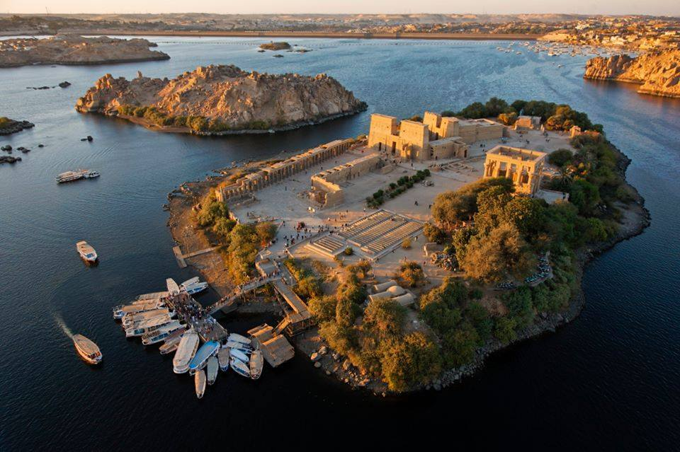
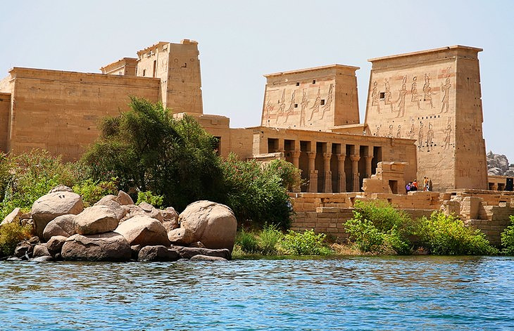
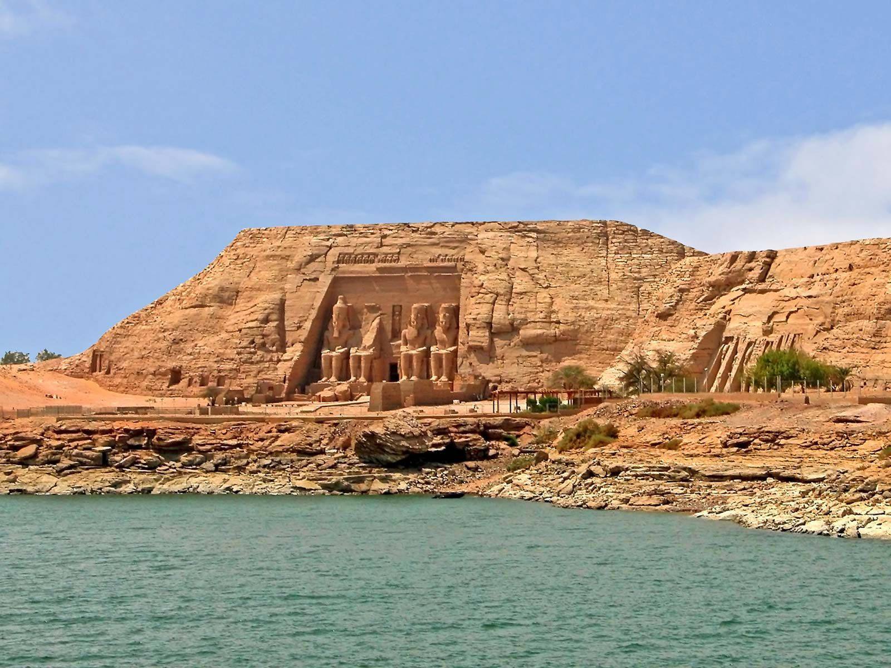
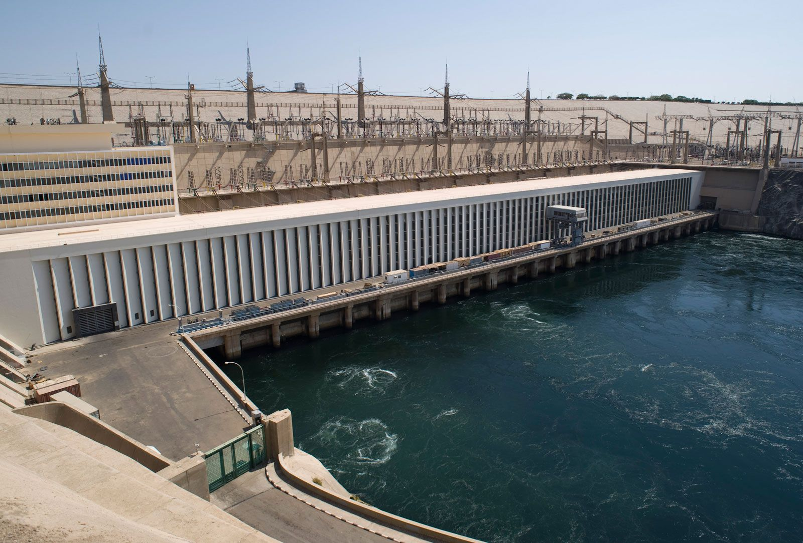
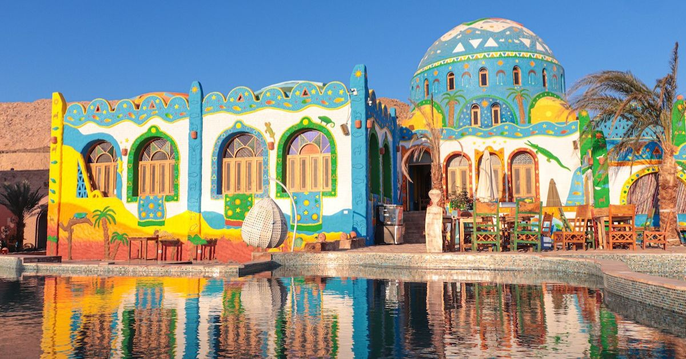
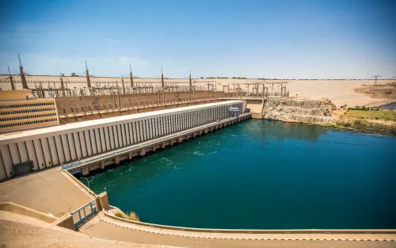
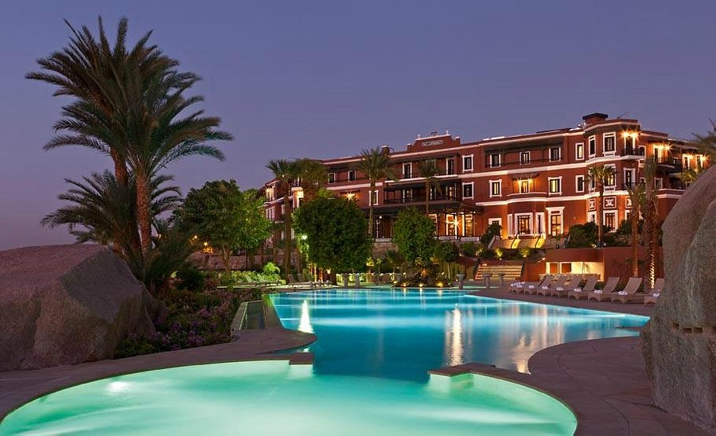
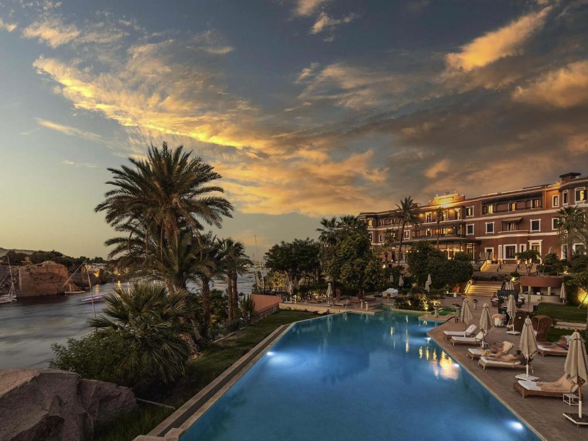
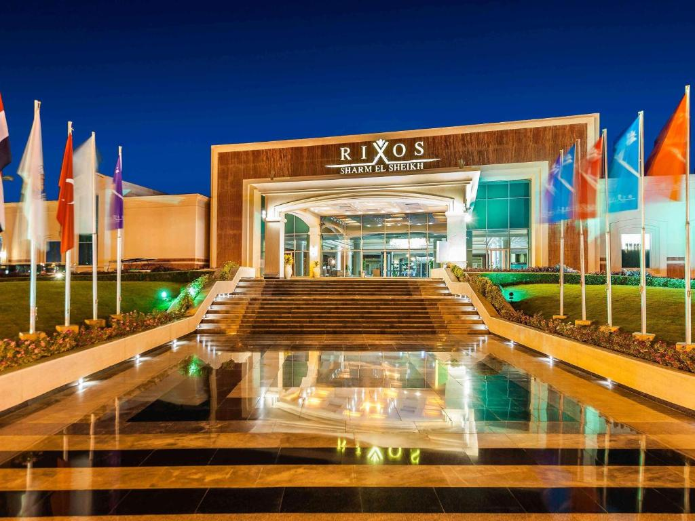

أسوان هي مدينة مصرية تقع في جنوب مصر على ضفاف نهر النيل، وتُعرف بـ "جوهرة النيل" لجمال طبيعتها ومناخها المعتدل طوال العام.
تشتهر أسوان بمعبدي فيلة وأبو سمبل العظيمين، والسد العالي أحد أعظم إنجازات الهندسة في القرن العشرين. كما تتميز بثقافتها النوبية الأصيلة وبيوتها الملونة.
تعد أسوان وجهة سياحية شتوية مثالية، حيث تتميز بأجوائها الهادئة والدافئة، وتجمع بين التاريخ العريق والطبيعة الخلابة.







